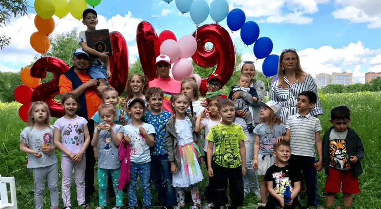

Монтессори-среда
Ребёнок учится самостоятельности в подготовленной среде — без давления и сравнения с другими.

Добро пожаловать в частный Монтессори детский сад «Совенок» в Мытищах — здесь забота о ребёнке, спокойная атмосфера и внимание каждому малышу.
Записаться на экскурсиюМы не учим — мы помогаем детям совершать открытия.
Небольшой сад и центр развития на ул. Колпакова — для детей от 2 до 7 лет в тёплой домашней атмосфере.
Ребёнок учится самостоятельности в подготовленной среде — без давления и сравнения с другими.

Уроки через песни, игры и естественное общение — язык усваивается без зубрёжки. Включено в стоимость посещения сада. Подробнее.

Помещение по нормативам, группа до 15 детей и мягкая адаптация.

Выездные экскурсии раз в 2–3 месяца — сад организует сам, без участия родителей.

Четырёхразовое меню из свежих продуктов на кухне сада. Учитываем аллергии и рекомендации врача.

Еженедельный осмотр врачом, ежедневное проветривание, бактерицидный рециркулятор и занятия физкультурой.
Индивидуальная работа в подготовленной среде и групповые занятия для всестороннего развития ребёнка.
В Монтессори-классе — работа с уникальным обучающим материалом: практическая жизнь, моторика, сенсорика, речь, основы математики и естествознания. Групповые занятия развивают интеллект, творческие способности, письмо и чтение, воспитывают порядок, самодисциплину и трудолюбие.
Дети приобретают внутреннюю мотивацию к обучению, умение концентрироваться и самостоятельность; после нескольких лет занятий они полностью готовы к школе.
Опытные монтессори-педагоги и специалисты по дошкольному развитию. Подробные биографии — на странице «О нас».

Руководитель, монтессори-педагог
МИМП, педагог-психолог. Более 20 лет опыта в дошкольном образовании и Монтессори-педагогике в Мытищах.
Педагог
Магистр по дошкольной дефектологии (МГОУ), повышение квалификации по логопедии.
Педагог
Магистр по дошкольной логопедии (МГОУ), опыт частной практики с детьми дошкольного возраста.
Частный детский сад «Совёнок» ведёт образовательную деятельность на основании лицензии. Родители могут направить средства материнского капитала на оплату посещения сада.
При наличии лицензии на образовательную деятельность средства материнского (семейного) капитала можно использовать для оплаты услуг детского сада — в соответствии с действующим законодательством РФ.
Уточните условия и список документов: +7 (905) 775-06-27.
Монтессори-среда, занятия и повседневная жизнь в «Совёнке».

Стоимость зависит от графика и возраста ребёнка. Наличие мест уточняйте по телефону +7 (905) 775-06-27.
Группа полного дня
Стоимость: 42 000,00 рублей в месяц.
Время пребывания: с 8:00 до 20:00.
Включено в стоимость:
Дополнительная оплата:
Вступительный взнос — 1 месячный платёж (единоразовый платёж после адаптации).
ЗаписатьсяГруппа кратковременного пребывания
Стоимость: 32 000,00 рублей в месяц.
Время пребывания: с 8:00 до 14:00.
Включено в стоимость:
Дополнительная оплата:
Вступительный взнос — 1 месячный платёж (единоразовый платёж после адаптации).
ЗаписатьсяГруппа кратковременного пребывания
Стоимость: 30 000,00 рублей в месяц.
Время пребывания: с 16:00 до 20:00.
Включено в стоимость:
Дополнительная оплата:
Вступительный взнос — 1 месячный платёж (единоразовый платёж после адаптации).
ЗаписатьсяВ государственных садах ясли и садовская группа — разные этапы: сначала ребёнка обычно оформляют в ясли (с 1,5–2 лет), а с трёх лет переводят в группу детского сада. Поэтому родители малышей с 2 лет часто ищут ясли или задаются вопросом, можно ли сразу отдать ребёнка в сад вместо яслей.
Частный детский сад «Совёнок» в Мытищах принимает детей с 2 лет — для многих семей посещение сада может заменить этап яслей. Группа небольшая, расписание и Монтессори-материалы подобраны с учётом возраста: дневной сон, прогулки, мягкая адаптация и помощь в самостоятельности (одевание, приём пищи). Перед записью мы знакомимся с ребёнком и обсуждаем, готов ли он к групповому дню.
Отзывы родителей о частном Монтессори детском саде «Совенок» в Мытищах: питание, подготовка к школе, логопед, адаптация и атмосфера.
Это тот самый сад, который выбирают сердцем. Очень много положительных моментов, которые выделяют его на фоне многих других, в частности, монтессори среда, уважительная к ребёнку и его возрастным задачам, навыкам самообслуживания: дети сами себе накладывают еду в тарелки, накрывают стол, сами выбирают себе интересное занятие.
Ходим в наш любимый садик уже 4 года. Дочь бежит в сад с первых дней. Питание отличное, своя кухня, все готовится на месте, а не привозное, как в других садах. Подстраиваются индивидуально, если есть мед. показания по питанию, дома отказывается кушать, потому что не так вкусно, как в садике.
В Совенок мы пришли уже в довольно взрослом возрасте в 5 лет. Для детей старшего возраста проводятся полноценные занятия по подготовке к школе, чей результат особенно заметен дома после занятий. Проводятся выездные экскурсии — спустя пару месяцев мы были спокойны, так как полностью доверяем нашему замечательному руководителю Надежде Николаевне.
Утром нет ни слез, ни уговоров – бежит с радостью! А вечером даже не хочет уходить, приходится уговаривать идти домой. Это ли не показатель того, что ребенку в саду хорошо и комфортно? Мы перешли к вам из частного детского сада, и разница, честно говоря, колоссальная.
Мы отдали сына в 2,4 года и очень рады, что остановили свой выбор именно на Совёнке, хотя я обошла все садики Мытищ. Адаптация к садику прошла великолепна. Теперь каждое утро просыпается и радостно бежит собираться в садик.
Разновозрастные группы, много доп занятий: английский язык, спорт, музыка-танцы, логопед для старшей группы. Раз в 2–3 месяца выездные экскурсии устраивает садик сам, без привлечения родителей. Программа очень насыщенная: лепят, рисуют, есть подготовка к школе и кулинарные занятия.
Оставьте заявку — перезвоним в рабочее время (пн–пт, 8:00–20:00) или позвоните +7 (905) 775-06-27.
Контакты детского сада и центра «Совёнок» в Мытищах
Частный Монтессори детский сад «Совёнок»
Адрес: 141002, Московская область, г. Мытищи, ул. Колпакова, д. 24
Контактное лицо:
ИП Климовских Надежда Николаевна
ИНН 670402361488
ОГРНИП 31650290005949 выдан 15.07.2016 г. ФНС по г. Мытищи
Режим работы детского сада: понедельник–пятница, 8:00–20:00
Телефон: +7 (905) 775-06-27
E-mail: klimovskih@yandex.ru